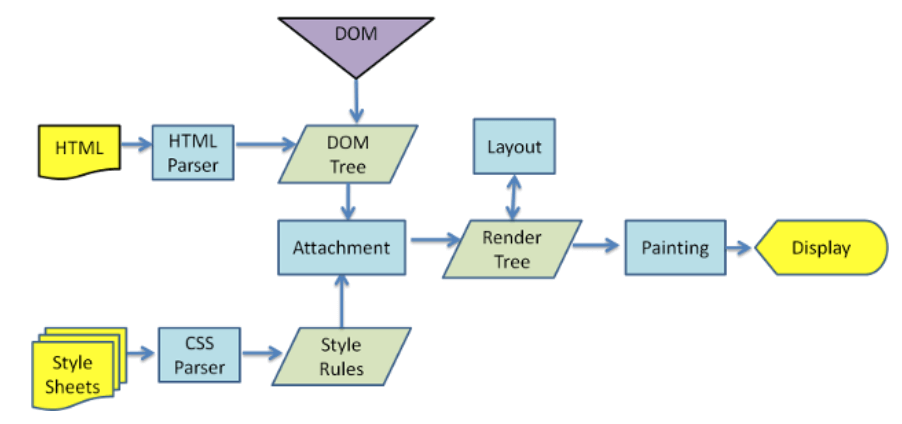

怎么理解回流跟重绘？什么场景下会触发？
参考答案
一、是什么
在HTML中，每个元素都可以理解成一个盒子，在浏览器解析过程中，会涉及到回流与重绘：
- 回流：布局引擎会根据各种样式计算每个盒子在页面上的大小与位置
- 重绘：当计算好盒模型的位置、大小及其他属性后，浏览器根据每个盒子特性进行绘制
具体的浏览器解析渲染机制如下所示：

- 解析HTML，生成DOM树，解析CSS，生成CSSOM树
- 将DOM树和CSSOM树结合，生成渲染树(Render Tree)
- Layout(回流):根据生成的渲染树，进行回流(Layout)，得到节点的几何信息（位置，大小）
- Painting(重绘):根据渲染树以及回流得到的几何信息，得到节点的绝对像素
- Display:将像素发送给GPU，展示在页面上
在页面初始渲染阶段，回流不可避免的触发，可以理解成页面一开始是空白的元素，后面添加了新的元素使页面布局发生改变
当我们对 DOM 的修改引发了 DOM 几何尺寸的变化（比如修改元素的宽、高或隐藏元素等）时，浏览器需要重新计算元素的几何属性，然后再将计算的结果绘制出来
当我们对 DOM 的修改导致了样式的变化（color或background-color），却并未影响其几何属性时，浏览器不需重新计算元素的几何属性、直接为该元素绘制新的样式，这里就仅仅触发了重绘
二、如何触发
要想减少回流和重绘的次数，首先要了解回流和重绘是如何触发的
回流触发时机
回流这一阶段主要是计算节点的位置和几何信息，那么当页面布局和几何信息发生变化的时候，就需要回流，如下面情况：
- 添加或删除可见的DOM元素
- 元素的位置发生变化
- 元素的尺寸发生变化（包括外边距、内边框、边框大小、高度和宽度等）
- 内容发生变化，比如文本变化或图片被另一个不同尺寸的图片所替代
- 页面一开始渲染的时候（这避免不了）
- 浏览器的窗口尺寸变化（因为回流是根据视口的大小来计算元素的位置和大小的）
还有一些容易被忽略的操作：获取一些特定属性的值
offsetTop、offsetLeft、 offsetWidth、offsetHeight、scrollTop、scrollLeft、scrollWidth、scrollHeight、clientTop、clientLeft、clientWidth、clientHeight
这些属性有一个共性，就是需要通过即时计算得到。因此浏览器为了获取这些值，也会进行回流
除此还包括getComputedStyle 方法，原理是一样的
重绘触发时机
触发回流一定会触发重绘
可以把页面理解为一个黑板，黑板上有一朵画好的小花。现在我们要把这朵从左边移到了右边，那我们要先确定好右边的具体位置，画好形状（回流），再画上它原有的颜色（重绘）
除此之外还有一些其他引起重绘行为：
- 颜色的修改
- 文本方向的修改
- 阴影的修改
浏览器优化机制
由于每次重排都会造成额外的计算消耗，因此大多数浏览器都会通过队列化修改并批量执行来优化重排过程。浏览器会将修改操作放入到队列里，直到过了一段时间或者操作达到了一个阈值，才清空队列
当你获取布局信息的操作的时候，会强制队列刷新，包括前面讲到的offsetTop等方法都会返回最新的数据
因此浏览器不得不清空队列，触发回流重绘来返回正确的值
三、如何减少
我们了解了如何触发回流和重绘的场景，下面给出避免回流的经验：
- 如果想设定元素的样式，通过改变元素的
class类名 (尽可能在 DOM 树的最里层) - 避免设置多项内联样式
- 应用元素的动画，使用
position属性的fixed值或absolute值(如前文示例所提) - 避免使用
table布局，table中每个元素的大小以及内容的改动，都会导致整个table的重新计算 - 对于那些复杂的动画，对其设置
position: fixed/absolute，尽可能地使元素脱离文档流，从而减少对其他元素的影响 - 使用css3硬件加速，可以让
transform、opacity、filters这些动画不会引起回流重绘 - 避免使用 CSS 的
JavaScript表达式
在使用 JavaScript 动态插入多个节点时, 可以使用DocumentFragment. 创建后一次插入. 就能避免多次的渲染性能
但有时候，我们会无可避免地进行回流或者重绘，我们可以更好使用它们
例如，多次修改一个把元素布局的时候，我们很可能会如下操作
const el = document.getElementById('el')
for(let i=0;i<10;i++) {
el.style.top = el.offsetTop + 10 + "px";
el.style.left = el.offsetLeft + 10 + "px";
}每次循环都需要获取多次offset属性，比较糟糕，可以使用变量的形式缓存起来，待计算完毕再提交给浏览器发出重计算请求
// 缓存offsetLeft与offsetTop的值
const el = document.getElementById('el')
let offLeft = el.offsetLeft, offTop = el.offsetTop
// 在JS层面进行计算
for(let i=0;i<10;i++) {
offLeft += 10
offTop += 10
}
// 一次性将计算结果应用到DOM上
el.style.left = offLeft + "px"
el.style.top = offTop + "px"我们还可避免改变样式，使用类名去合并样式
const container = document.getElementById('container')
container.style.width = '100px'
container.style.height = '200px'
container.style.border = '10px solid red'
container.style.color = 'red'使用类名去合并样式
<style>
.basic_style {
width: 100px;
height: 200px;
border: 10px solid red;
color: red;
}
</style>
<script>
const container = document.getElementById('container')
container.classList.add('basic_style')
</script>前者每次单独操作，都去触发一次渲染树更改（新浏览器不会），
都去触发一次渲染树更改，从而导致相应的回流与重绘过程
合并之后，等于我们将所有的更改一次性发出
我们还可以通过通过设置元素属性display: none，将其从页面上去掉，然后再进行后续操作，这些后续操作也不会触发回流与重绘，这个过程称为离线操作
const container = document.getElementById('container')
container.style.width = '100px'
container.style.height = '200px'
container.style.border = '10px solid red'
container.style.color = 'red'离线操作后
let container = document.getElementById('container')
container.style.display = 'none'
container.style.width = '100px'
container.style.height = '200px'
container.style.border = '10px solid red'
container.style.color = 'red'
...（省略了许多类似的后续操作）
container.style.display = 'block'回流（Reflow）和重绘（Repaint）是浏览器在渲染页面时发生的两种性能成本较高的操作。
回流（Reflow）
回流是指浏览器需要重新计算元素的尺寸、位置等属性，然后重新排列这些元素的过程。当DOM结构发生变化时，浏览器需要重新计算这些元素的布局信息。
触发回流的场景：
- 页面初次加载。
- 元素尺寸、位置或内容发生变化（如通过JavaScript修改样式）。
- 浏览器窗口大小变化（响应式设计）。
- 元素的class或id属性改变。
- 调用了某些会引起布局变化的方法，如offsetTop、offsetLeft、scrollTop、scrollLeft、clientTop、clientLeft等。
重绘（Repaint）
重绘是指当元素的外观（如颜色、背景色、边框颜色等）发生变化，但不影响布局时，浏览器需要重新绘制这些元素。
触发重绘的场景：
- 元素的颜色、背景色、边框颜色等属性改变。
- 元素的可见性发生变化（如visibility、display属性改变）。
- 元素的box-shadow、text-shadow等属性改变。
- CSS伪类状态改变，如:hover、:focus。
- 理解回流和重绘的重要性
回流和重绘是性能瓶颈的常见原因。它们都会增加浏览器的渲染负担，尤其是当涉及到大量元素时。因此，优化回流和重绘是提高网页性能的关键。
优化策略
- 减少不必要的DOM操作，尤其是在复杂的页面布局中。
- 使用transform和opacity属性进行动画，因为它们可以触发合成（Compositing），从而避免回流和重绘。
- 将多个会引起回流的样式更改合并到一个动画帧中进行。
- 使用文档片段（Document Fragment）或display: none的元素进行DOM操作，以减少对可见元素的影响。
- 使用CSS变量（Custom Properties）来实现主题切换，以减少重绘和回流。
考察重点
- 对回流和重绘概念的理解。
- 能够识别和解释触发回流和重绘的场景。
- 掌握减少回流和重绘性能影响的优化技巧。